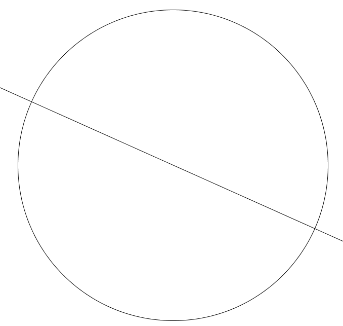

Thales of Miletus
Thales of Miletus
Thales learned geometry from the Egyptians. For the Egyptians geometry was a practical skill necessary for construction and surveying. Thales extracted basic principles from the Egyptians' practical knowledge. He then used these basic principles to prove general theorems. His general theorems could then be put to practical use in applications involving surveying, military conflicts, and astronomy. Thales thus introduced to geometry the notions of abstraction and proof. At least six theorems in geometry are attributed to Thales.
- Diameters of Circles: Any diameter of a circle, such as the one in this image, bisects the circle. 
- emicircles: Any angle inscribed in a semicircle is a right angle.
- Angles in Isosceles Triangles: The base angles of an isosceles triangle are equal. In this diagram, the sides marked A and B have the same length, therefore, the indicated angles must be equal.
- Vertical Angles: The angles indicated here formed by the intersecting lines are called vertical angles. Thales proved that they must be equal.
- The angles b and b' are equal in measure, and the sides E and E' have the same length. Therfore, the two triangles are congruent.
- Similar Triangles: If a line is drawn parallel to one side of a triangle, then it cuts the other sides proportionally. In this image, the line containing the points B and C is parallel to the line containing the points D and E. Therefore, the triangle ABC and the triangle ADE are congruent. This means that the ratio of the length of AB over the length of AD is equal to the ratio of the length of AC over the length of AE.